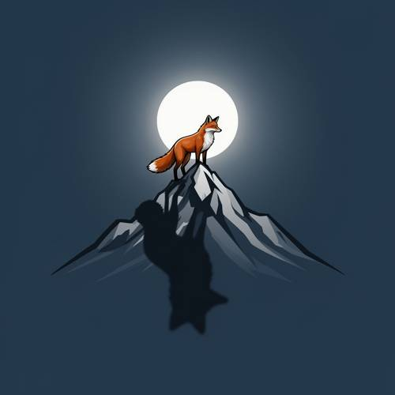
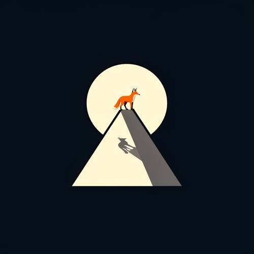
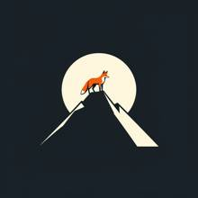
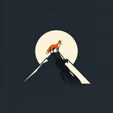
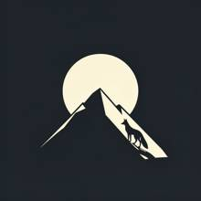
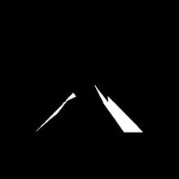
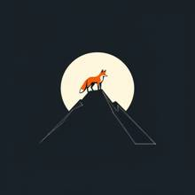
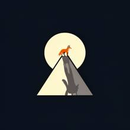
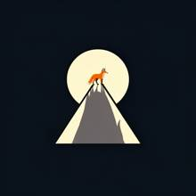

Grammar — Design a logo: A fox is standing on the top of the mountain. The moonl
Design a logo: A fox is standing on the top of the mountain. The moonlight is very bright, so its shadow is drawn long.

Direct — one call, no iteration

Continuum — Kimi K3 + FLUX.2-dev
Judge — Direct
FAILGrammar - Pronoun Reference — The prompt specifies 'its shadow', referring to the shadow belonging to the fox. The image shows a shadow being cast from the mountain peak where the fox stands. However, the shape of this shadow is not that of the fox; it appears to be a larger, more menacing canine, possibly a wolf, in a different posture.
FAILLogical Reasoning — The prompt establishes a logical sequence: the bright moonlight behind the fox is the cause for its long shadow. The image depicts a bright moon behind the fox and a long shadow cast forward. However, the shadow's form is not that of the fox. It is the shadow of a different creature, a wolf-like figure. This contradicts the logical expectation that an object casts a shadow of its own shape.
Judge — Continuum
PASSGrammar - Pronoun Reference — The pronoun 'its' in the phrase 'its shadow' refers to the fox. The image correctly depicts a shadow that corresponds in shape and position to the fox standing on the mountain peak, demonstrating a correct interpretation of the pronoun reference.
PASSLogical Reasoning — The prompt establishes a cause-and-effect relationship: bright moonlight causes a long shadow. The image visually represents this logic. There is a large, bright circle behind the fox, representing the bright moonlight. This light source is positioned to cast a long, elongated shadow of the fox down the side of the mountain, fulfilling the logical requirement of the prompt.
What the agent did
Thinking
We need need generate logo. Need perhaps no text unless user says logo but no word. Need image. First generate flux2-dev. Need detailed visual, likely minimalist vector emblem: fox atop mountain, bright moon, long shadow. Need inspect image. Let's call generate 1024x1024.
Step 1 — `generate_image`
{
"model": "flux2-dev",
"prompt": "Minimalist vector logo design: a fox standing proudly on the peak of a mountain beneath a large bright full moon. Strong white moonlight silhouettes the fox and casts one unusually long, clear shadow down the mountain slope. Stylized geometric shapes, clean crisp edges, high contrast, balanced centered emblem composition, dark navy and deep charcoal background with warm orange fox accent and pale ivory moon, isolated logo on plain background, no text, no watermark, no photorealism."
}
Result img_0

Thinking
Need inspect. Image shown. It actually captures but shadow is white strip? User says moonlight bright so shadow drawn long. The fox shadow should be dark long likely on lit mountainside. Current right slope white triangular maybe light, but fox has no dark long shadow. Need edit targeted to add long dark shadow cast diagonally down right slope, preserving. Also maybe moon should be perfectly circular but partly occluded by mountain okay. Need mark best current as interim.
Step 2 — `mark_best`
{
"image": "img_0",
"reason": "Strong minimalist logo composition with fox, moon, and mountain, though the fox\u2019s long shadow needs to be clearer."
}
Thinking
Now edit. Need maybe one long black fox-shaped shadow down right slope, visible against ivory lit strip. Instruction only change.
Step 3 — `edit_image`
{
"image": "best",
"model": "flux2-dev",
"prompt": "Add a single long dark fox-shaped shadow extending from the fox\u2019s feet diagonally down the pale ivory right slope of the mountain; make the shadow clearly visible and roughly twice the fox\u2019s height while preserving the clean vector logo style."
}
Result img_1

Thinking
It added large abstract shadow but not very fox-shaped, maybe way too amorphous and spills onto dark slope. Could improve. Need maybe inspect crop? The central area visible. We could edit image img1 perhaps simplify shadow to crisp geometric shape, one silhouette with pointed ears/head/body/tail on lit right slope. But since slope ivory narrow, fox shadow can be more diagonal elongated. Current shadow is mostly on dark slope, making indistinct. Better approach perhaps edit from img0 again, but previous. Could generate perhaps better manually. Prompt edit from img0: "On pale ivory triangular right slope add one elongated crisp black silhouette shadow of fox, extending..." It did in img1 but overshot, weird. Could try new seed? instruction same perhaps from img0. Use image best and different seed perhaps random not set. It might improve. The previous edit started from img0. Let's call same with more specific. Need not set seed.
Step 4 — `edit_image`
{
"image": "img_0",
"model": "flux2-dev",
"prompt": "On only the pale ivory right-hand mountain slope, add one crisp flat dark silhouette shadow of the standing fox. Stretch the shadow diagonally downward and right, preserving its recognizable pointed ears, body, legs, and tail, and keep it within the pale slope."
}
Result img_2

Thinking
Oops fox itself disappeared from top! Bad. Best remains img0. Could perhaps generate a better image from scratch with stronger explicit relation: fox at top and long shadow stretching down illuminated snow face. Since initial img0 is mostly right except shadow not visible. A new generation might yield. But instruction says do not regenerate from scratch when mostly works? Yet we can still improve from img0. Maybe inpaint mask region right slope to add fox-shaped shadow. The right pale slope is narrow. Inpaint text can't copy object but can create silhouette. We need pixel-exact outside. Segment region "the pale ivory triangular right-hand slope of the mountain". Then inpaint mask. Need white region right slope. Use segment. But if prompt includes shadow only, it may add. Yet inpaint regenerates entire right slope, could alter mountain. Could make mask manually via segment text. Let's try segmentation on img0 for "the pale ivory triangular right slope of the mountain" negative moon/background. Then inpaint with prompt "a smooth pale ivory mountain slope with one long crisp dark fox-shaped cast shadow..." This preserves rest. Need maybe mask includes right slope only. Let's segment.
Step 5 — `segment`
{
"image": "img_0",
"description": "the pale ivory triangular right slope of the mountain",
"negative_descriptions": [
"the full moon",
"the dark left mountain slope",
"the background",
"the fox"
],
"threshold": 0.3,
"mask_threshold": 0.5
}
Result img_3

Thinking
Mask includes left edge too due semantic. Could maybe negative left slope but edge lit. Inpainting both edges might be okay but could change. Better create precise box mask via segment_boxes on right slope coordinates approx [395,350,617,573] normalized? image 768. segment_boxes.
Bad segments fox. Could use mask from img3 but mask includes entire right slope and left ridge. Maybe acceptable. Use inpaint with prompt focused entire region. White includes right slope plus left ridge. "Smooth pale ivory slopes, with one long crisp dark silhouette of a standing fox cast down the broad right-hand triangular slope..." It may preserve mountain. Inpaint only these shapes, rest exact. The region small, fine detail limited but enough. Let's try.
Step 7 — `inpaint_image`
{
"image": "img_0",
"mask": "img_3",
"prompt": "smooth pale ivory mountain slopes; the broad right-hand triangular slope contains one long crisp dark cast shadow of a standing fox, stretched diagonally downward with a recognizable pointed head and ears, slim body, four legs, and bushy tail, in a clean minimalist vector style"
}
Result img_5

Thinking
Oops inpaint turned ivory slopes dark due prompt dark shadow overwhelmed. Bad. We should preserve img0 marked. Could use new generation maybe perhaps simpler: design scene where mountain face ivory/lit, fox at top, dark fox-shaped long shadow. Need better prompt. Original model placed fox. Could perhaps make mountain itself pale gray so dark shadow visible. Logo maybe full moon background and a white mountain. Let's generate new from scratch? Current best mostly good. We can generate alternatives. Prompt stronger: "moonlit white triangular mountain face, fox orange at peak, its black silhouette shadow cast long down illuminated face." Maybe image yields. Use 1024.
Step 8 — `generate_image`
{
"model": "flux2-dev",
"prompt": "Clean minimalist vector logo on a dark navy background: a bright ivory full moon behind a single triangular mountain. A small orange fox stands at the mountain peak in profile. The entire front face of the mountain is pale moonlit ivory, and the fox casts one unmistakable long flat dark-gray shadow shaped like the fox diagonally down that illuminated mountain face. Crisp geometric edges, high contrast, centered emblem, no text, no texture, no photorealism."
}
Result img_6
Thinking
This is quite good! Fox at top, long shadow shape perhaps abstract fox clearly cast down left face? Actually shadow on ivory slope is fox-like but maybe appears jumping, and gray right triangular face. Meets. Need inspect crop maybe logo details and shadow. Use inspect_region around center.
Crop excludes full. Fox good, shadow maybe has pointed ears but appears horizontally oriented? It is long and fox-shaped enough. However maybe shadow doesn't connect to fox's feet? It starts below a gap due perspective. Could edit to make shadow originate at fox's feet and stretch cleanly. Current shadow maybe too amorphous and touches? The prompt asks drawn long. Could improve via edit from img6: "connect cast shadow to fox's feet..." But risk. Current image probably best over img0. Mark img6. Then perhaps one edit to simplify: "Make the dark shadow begin at fox's feet and become a cleaner elongated standing-fox silhouette..." Might change. Could try. Mark first.
Step 10 — `mark_best`
{
"image": "img_6",
"reason": "Clear minimalist logo with the fox at the mountain peak, a bright full moon, and a long visible cast shadow on the illuminated slope."
}
Thinking
Need maybe improve shadow starts at feet and more recognizable. Use edit from img6. Targeted.
Step 11 — `edit_image`
{
"image": "best",
"model": "flux2-dev",
"prompt": "Refine the fox\u2019s cast shadow into a cleaner elongated silhouette of a standing fox, starting directly beneath the fox\u2019s feet and stretching down the pale mountain face; give the shadow a pointed snout and ears, four legs, and a bushy tail while keeping it flat and crisp."
}
Result img_8

Thinking
Worse shadow looks like upside-down animal, weird. Best img6 stays. Could perhaps edit img6 again different seed maybe same prompt. We tried one. Maybe use another specific: "Make shadow compact..." But risk. Could maybe final img6 is good enough. Need inspect maybe crop shadow. img7 shows it resembles fox shadow, albeit no direct connection. Maybe prompt "drawn long" yes. Could perhaps improve composition by making shadow from fox feet, but current visible. Could use edit_image from img6 with same maybe new random output could be better. Try one more from img6 (not img8) with exact: "Extend existing dark fox-shaped shadow upward so it touches fox's feet..." It may preserve. Let's do.
Step 12 — `edit_image`
{
"image": "img_6",
"model": "flux2-dev",
"prompt": "Extend the existing dark fox-shaped shadow upward so it begins directly at the fox\u2019s feet, while keeping the shadow\u2019s current elongated form, flat gray color, and clean vector edges."
}
Result img_9

Thinking
Worse, shadow lost. Best img6 remains. Need maybe could generate another improved from scratch. But policy says stop good enough. Need mark check: img6 marked, subsequent edits worsened. We should perhaps call mark_best img6 again as final action. Then respond. Ensure no more.
Step 13 — `mark_best`
{
"image": "img_6",
"reason": "Final selection: clean centered vector logo with a fox standing on the mountain peak, a bright full moon, and a long recognizable cast shadow on the moonlit slope."
}
Thinking
Final answer concise, mention selected.
Model
Created a minimalist vector-style logo featuring: - A fox standing atop a mountain peak - A large, bright full moon - A long fox-shaped shadow cast across the moonlit slope - Clean geometric forms with a high-contrast navy, ivory, gray, and orange palette - No text, keeping the emblem versatile The final selected design is **img_6**.